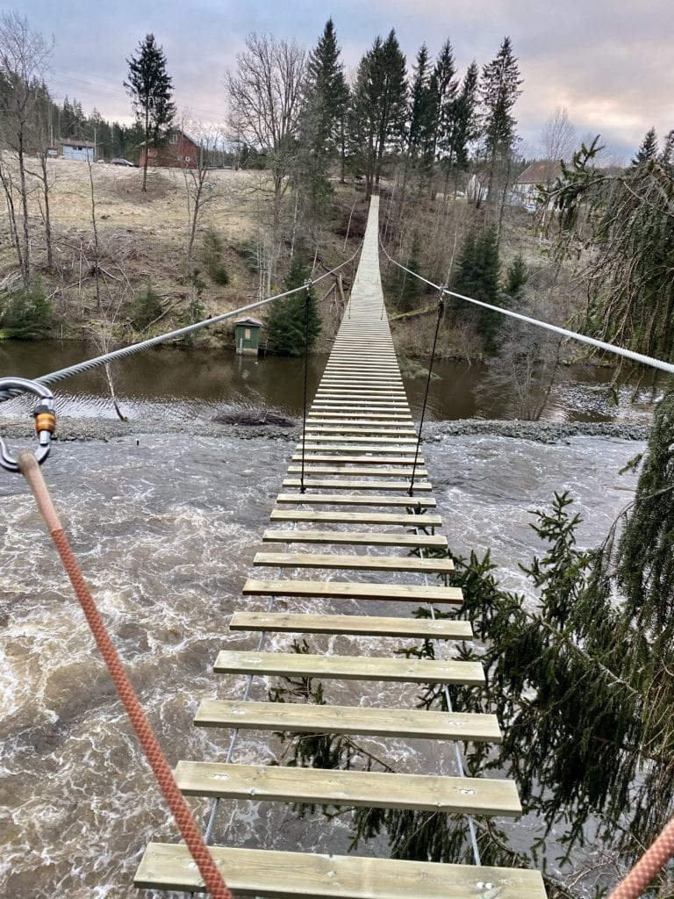
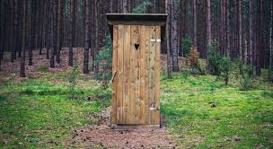
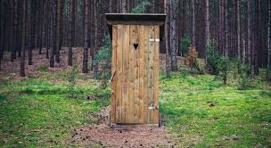
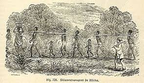

Helgøy er egentlig en klomp med stein ute i vanet med noen hus på. De har ikke engang kloak, strøm, vann og internett. Hvem vil egentlig bo på den øya?
Her er et bilde om hvordan de får strøm.

Dette er ikke greit!!!
Dette er deres måte å få takk i strøm på. Få barn til å løpe i hamsterhjul for å få strøm. Mangen har ringt politiet på dem, men polititet gjør ingen ting. De vil heller kjøpe is, fange folk som kjører i fulla eller se på en henge bro.
De har ikke do så de er nødt til å gå på do i et utedo. De har heller ikke kloak så det er avogtil kloakoversvømelser på "helgøy". Her er noen bilder av hvordan det ser ut.
 

De har også noen slaver som jobber for dem. Detter er ikke greit. Først har de barn som løper i et hamster hjul for å få støm, har ikke engang kloak eller utedo. Og i tilleg slaver!!! ikke bar!!!
Så det dere har funnet ut av på denne netsiden er at helgøy ikke er en Øy. Og hva de holder på med på den Øya.
Tilbake